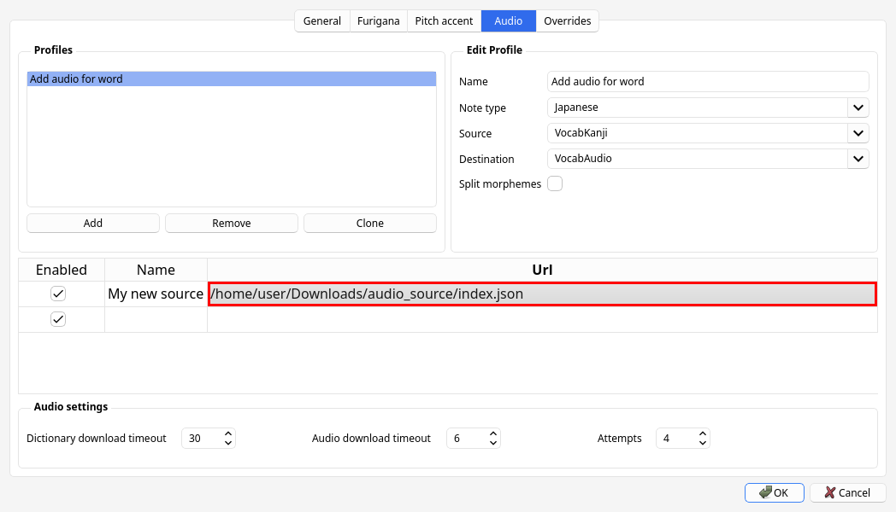

Japanese support for Anki
Anki can be used to learn a variety of different subjects, including languages. What makes Anki such a fantastic tool for Japanese learners is the vast array of plugins or "add-ons" that extend its functionality. One of the most useful add-ons for learning Japanese is AJT Japanese. Its main features include adding furigana, adding pitch accent information, and adding pronunciation audio files to Anki cards.
Installation
The installation process is similar to other Anki plugins and can be accomplished in three steps:
- Open the "Install Add-on" dialog by selecting "Tools" > "Add-ons" > "Get Add-ons..." in Anki.
- Input
1344485230into the text box labeledCodeand press the OK button to proceed. - Restart Anki when prompted to do so in order to complete the installation of AJT Japanese.
Overview
The AJT Japanese add-on provides a range of features to make learning Japanese easier. The main feature is the furigana generation, which automatically adds furigana — readings of kanji characters. The readings appear as small kana characters above the kanji. When a card is created or modified by the user, furigana will be placed to a dedicated field, allowing the user to learn how words should be read. If a word has many readings, the add-on will print a list of readings, separated by commas by default. The learner needs to be aware that a word can be read different ways and learn the reading relevant to the example sentence the word is used in.
Note: Apart from some corner cases, we always recommend having an example sentence displayed on the front side of a flashcard. Words never exist in isolation, people use them to form sentences. Without reading a usage example it is nearly impossible to reason about the meaning or reading of a word.
Another important aspect of the Japanese language is pitch accent. Pitch accent is taken very seriously among Japanese learners, and especially among AJATTers. Most people study it diligently. If you don't know pitch accent of a word, you don't know how to say it. AJT Japanese offers two ways to add pitch accent information to your Anki cards. It can add pitch numbers or pitch patterns to cards. Pattern and number can be placed in separate fields or combined in one field. Pitch accent pattern indicates the rising and falling tone that occurs when speaking. Pitch accent number indicates the number of a mora after which the tone of the voice drops from high to low, when counting morae from the beginning of the word. Most of the time pitch drops only once in a given word, so its entire accent can be represented with one number. In a few corner cases the add-on will output two digits.
Of course, the best way to learn correct pronunciation is to hear it. AJT Japanese includes built-in support for adding pronunciation audio to your cards. By default, it comes with audio sources provided by Ajatt-Tools, and supports adding custom sources. Any user can create their own audio sources. The audio files provided by default come from Japanese accent dictionaries, so they are pretty accurate. Audio sources can be online or offline. Online audio sources fetch audio files from the internet, whilst offline audio sources are stored locally. If you have additional disk space on your computer, it is recommended to download and use offline sources to ensure that audio files are added instantly. The default audio sources are online.
Usage
If you have fields named VocabKanji, VocabFurigana, VocabPitchPattern, VocabAudio on your notes,
the lookups will be performed on the VocabKanji field,
furigana will be added to the VocabFurigana field,
accents will be added to the VocabPitchPattern field,
and audio will be added to the VocabAudio field.
Video demonstration.
To generate readings, accents and audio,
focus in the VocabKanji field and press Tab or switch focus away from the field.
You can change field names or add more source and destination fields in Options.
When a new card is created via AnkiConnect (by using Yomichan, GoldenDict, etc.), the add-on detects such events and will append the needed information to the card as well.
In the Anki Browser's toolbar you will find the following buttons:
- Regenerate all fields. A shortcut that allows you to replace all readings, accents and audio files with freshly generated information.
- Generate furigana in field. Replace the content of the current field with the same text but with furigana added.
- Reconvert field as hiragana. Replace all kanji with their kana readings.
- Clean furigana in field. Remove all text in brackets, effectively removing furigana.
Some of these buttons are off by default. Check the configuration.
In the Anki Browser's context menu actions you will find the following options:
- Pitch accent lookup. Show a window with the currently selected text split into individual words, with pitch accent information shown next to each word.
- Furigana for selection. Add furigana to the selected text.
- Convert to katakana. Replace hiragana characters with katakana characters.
- Convert to hiragana. Replace katakana characters with hiragana characters.
- Literal pronunciation. Convert selected text to a form that resembles the way it is actually pronounced. Implies conversion to katakana and replacement of certain characters.
Configuration
To configure the add-on, open Anki and select "AJT" > "Japanese Options...".
Profiles
Each of the three main features works according to profiles
which are created by the user.
A profile specifies a source field, a destination field, and what triggers the profile.
When the specified conditions are met, the profile invokes a task associated with it.
For example, when the Note Type is Japanese and the source field is VocabKanji,
the task is to write furigana to the VocabFurigana field.
The split morphemes setting determines whether an input string should be split into words.
It makes sense to enable splitting for fields that are expected to contain more than one word,
but keep it disabled for fields that are expected to contain only one word.
Profile types are tried in this order:
- Furigana
- Pitch accent
- Audio
If there is more than one profile inside a profile type, the profiles are tried in the order they are listed.
Each task can be triggered by one of the 4 callers:
Focus lost. When the user presses Tab or switches focus away from the selected source field in the Browser or in the Add dialog.Toolbar button. When the user presses the "Regenerate all fields" button in the Browser's toolbar.Note added. When AnkiConnect adds a new note, but not when the user adds a note manually via the Add dialog.Bulk add. When the user presses the "Bulk-generate" button in the Browser's "Edit" menu.
When editing a profile, you can select what callers the profile should "answer" to. For example, you can generate furigana when focus is lost but not when a note is added.
Audio files
AJT Japanese can add audio files from accent dictionaries to Anki cards. To set up audio profiles and audio sources, go to "AJT" > "Japanese Options" > "Audio".
Add at least one audio profile, selecting the source and destination fields.
Below Profiles, you will see a list of loaded audio sources. Sources can be enabled or disabled. Each source is given an arbitrary name and a URL that points to its index file.
When a new source is added, AJT Japanese downloads its index file and figures out where to find audio files and what audio files are available based on information stored in it.
Online audio sources
Audio files are stored remotely, only the index file is downloaded. When requested, AJT Japanese downloads audio files from the Internet, using the provided URLs. All default audio sources are online audio sources.
To add a new online audio source, paste the URL of the index and give it a unique name.
Currently available online audio sources:
- NHK accent dictionary, 2016, extended.
- NHK accent dictionary, 2016, standard.
- NHK accent dictionary, 1998.
- Shinmeikai 8th edition.
Offline audio sources
Audio files are stored locally, on the hard drive. When requested, AJT Japanese copies the needed files to the Anki collection.
To add a new offline audio source,
you need to download its entire folder with all audio files (usually a few hundred MiB).
In the folder you will find a file named index.json.
Copy the full path to the file and paste it into the "URL" field.
Give it a unique name.
The add-on will figure out the rest based on the information inside the json file.
Currently available offline audio sources:
- NHK accent dictionary, 2016, extended.
- NHK accent dictionary, 2016, standard.
- NHK accent dictionary, 1998.
- Shinmeikai 8th edition.

Screenshot.
Creating a custom audio source
To create a new audio source from scratch,
the first thing you will need is a large folder with audio files
featuring native speech recordings.
Name this folder media.
Next, create the index file for AJT Japanese and name it index.json.
It should contain the following data:
- Information about the source.
- What words correspond to what files.
- Information about each audio file.
Example index.json file
{
"meta": {
"name": "My audio source",
"year": 2023,
"version": 2,
"media_dir": "media"
},
"headwords": {
"私": ["file1.ogg", "file2.ogg"],
"僕": ["file3.ogg", "file4.ogg"]
},
"files": {
"file1.ogg": {
"kana_reading": "わたし",
"pitch_pattern": "わたし━",
"pitch_number": "0"
},
"file2.ogg": {
"kana_reading": "わたくし",
"pitch_pattern": "わたくし━",
"pitch_number": "0"
}
}
}
name— the name of the audio source.year— when the audio files were created.version— version of thejsonfile, in case the format will change in the future.media_dir— relative path to themediadirectory, the folder where the audio files are stored.media_dir_abs— absolute path to themediadirectory. This property takes precedence overmedia_dir. It is optional and is intended to be specified whenindex.jsonand themediafolder are in different locations.
The headwords sub-dictionary maps words to files.
For each word specify what files represent its pronunciation.
The files sub-dictionary maps files to their properties.
Supported keys: kana_reading, pitch_pattern, pitch_number.
At least kana_reading should be present.
When you finish creating the index.json file,
add it as a new source in Options.
Overrides
This table allows you to enter information about words that AJT Japanese doesn't know about.
The data applies to readings and pitch accents.
If pitch accent of a word is not known, you can insert ? in the "Pitch accent" field.
If a word has multiple pitch accents, specify them separated by commas, e.g. 1,2.
Conclusion
Overall, AJT Japanese is an incredibly powerful tool for anyone who is serious about learning Japanese. Its furigana generation, multiple readings support, pitch accent information, and pronunciation audio make it an essential addition to any Japanese learner's toolbox. With its range of features, it can help learners of all levels become more confident in their Japanese language skills. Best of all, it's completely free/libre and easy to use. Give it a try and see how it can help you master the Japanese language!
Tags: guide